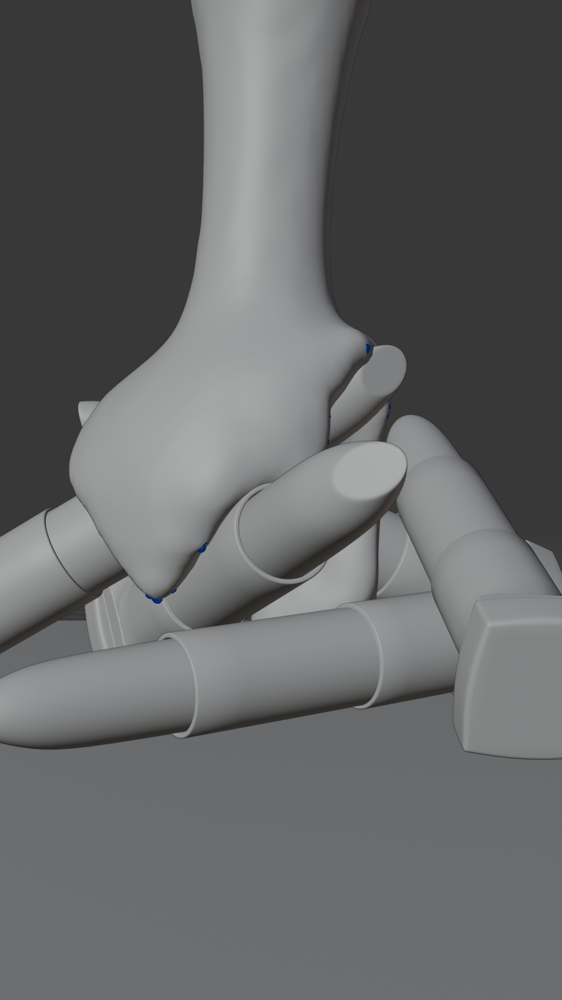
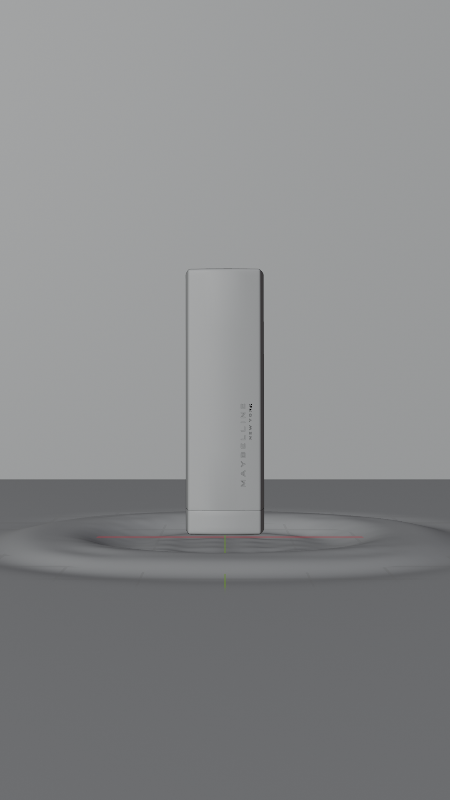
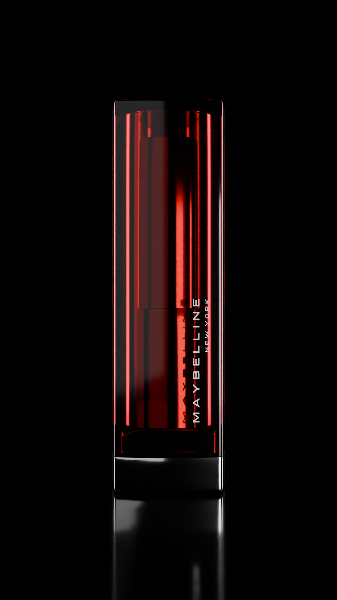
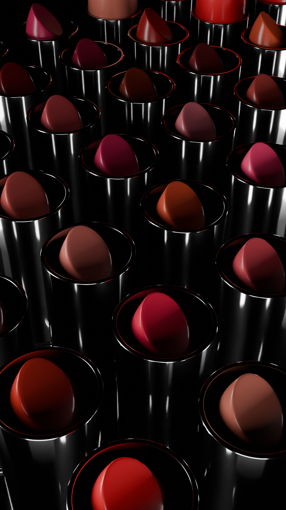

Visuellement, la mise en scène repose sur un fond noir uni et un éclairage à quatre points, révélant la matérialité des objets : métal brillant, verre coloré transparent et silhouettes raffinées. L’ensemble crée une atmosphère élégante, imposante et charismatique, fidèle à l’image de la marque.




J’ai opté pour un montage dynamique alternant plans impactants et transitions rythmées, soutenu par une
bande sonore hip-hop/rap. Le drop musical marquait la transition entre une première partie plus mystérieuse,
présentant le produit de manière globale, et une seconde partie plus rapide et percutante, mettant en avant ses caractéristiques clés.